...DE EXPLORAÇÃO, MISÉRIA E ESCRAVIDÃO!!!
NÃO TEMOS NADA PARA COMEMORAR!!!
NÃO SE DEIXE ENGANAR PELA MÍDIA, A REALIDADE NÃO É O QUE VEMOS NA TV, MAS SIM O QUE VEMOS NAS RUAS E NOS CAMPOS!!!

"Brasil, Outros 500"
22 DE JANEIRO: HISTÓRIA E MENTIRA
Até onde continuaremos a acreditar nas
mentiras que
aprendemos nas escolas, em uma versão
oficial da
História, tendenciosa, escrita somente
pelos
poderosos, que ensina a decorar datas cívicas
ignorando os valores humanos, limitando e negando
a
capacidade crítica das pessoas?
A História só se repete enquanto
farsa!
A mídia também controla as nossas
cabeças com suas
campanhas positivistas, dizendo que o Brasil
vai
completar 500 anos. Mentira! O Brasil não
nasceu de um
momento para outro, o que completará 500
anos é a
exploração de índios, negros
e da classe pobre.
Hoje escutamos que vivemos num país democrático,
mas
não tem coerência trabalharmos obrigatoriamente
para
sobreviver e não viver, sustentando um
bando de
criminosos de colarinho branco. Não somos
livres!
Somos escravizados pelo sistema capitalista que
só
libertou os negros para que eles também
pagassem
impostos e trabalhassem para ricos.
Mas agora vamos a outra versão da História:
durante
500 anos o homem branco vem com a sua visão
utilitarista destruindo tudo o que toca em terras
americanas. Ao desembarcar aqui no Brasil os
portugueses e europeus encontraram centenas de
povos
que somavam milhões de pessoas com uma
riqueza e uma
pluralidade étnica e cultural inimaginável.
Por tudo isto estamos hoje de luto pelos 500
anos de
massacre, dominação e exploração
dos povos indígenas
que aqui viviam, dos africanos escravizados e
domesticados, e de todo povo brasileiro que,
tal qual
há 500 anos, ainda convive com a injustiça,
a miséria
e as informações deturpadas sobre
sua própria
História.
E AGORA, O QUE COMEMORAR NESTE 22 DE JANEIRO?
A
INVASÃO? O MASSACRE? A MENTIRA? E O QUE
É PIOR: VOCÊ
NÃO DECIDE NADA
Organização: Movimento "Brasil,
Outros 500:
Resistência Negra, Indígena Caiçara
e Popular" e
Coletivo Alternativa Verde (CAVE).
Apoio: União Libertária da Baixada
Santista (ULBS),
Projeto Anarquistas contra o Racismo (ACR), Rede
Libertária, Mov. p/ Universidade Pública
na Baixada
Santista (MUP), Movimento Nacional dos Meninos
e
Meninas de Rua, Movimento em Defesa da Vida (MDV),
Célula Viva, Fórum de Saúde
e Meio Ambiente BS, GENEA,
S.O.S Saneamento Básico, Somecon, Agência
de Notícias
Anarquistas (ANA).
* Este folheto (cerca de 7.000) foi distribuído
na
manifestação contra o V centenário,
realizada em São
Vicente, dia 22 de janeiro , durante a " Encenação
da
Fundação da 1ª Vila do Brasil”,
evento que fez parte
das comemorações oficiais dos 500
anos dos
descobrimento do Brasil.
R.A.I.A.R.
Rede Anarquista de Informação
e Ação Revolucionária

Vote Nulo Consciente
Não Sustente Parasitas!